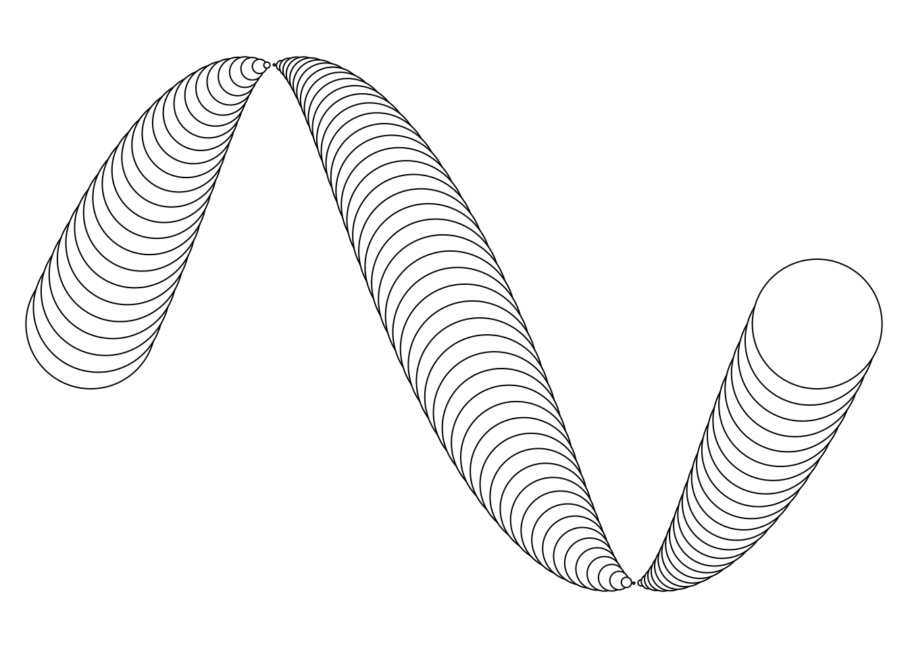
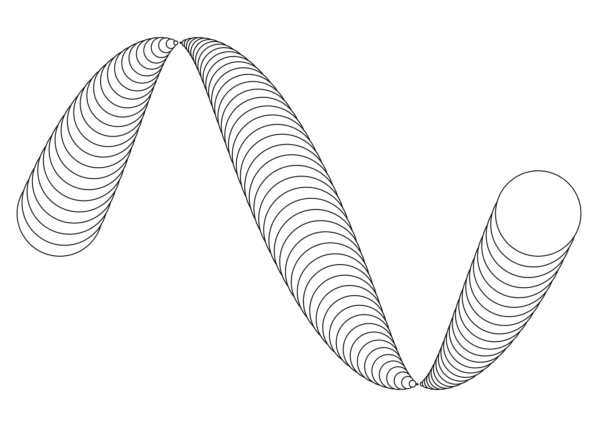
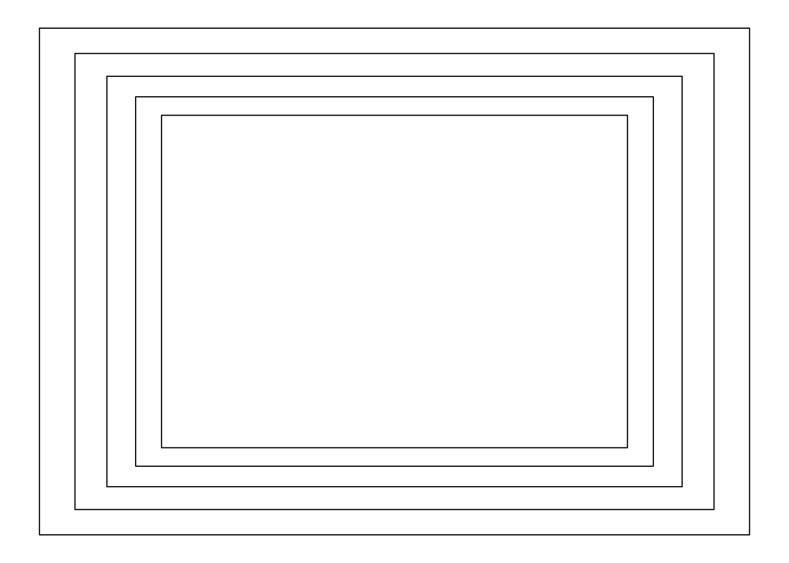
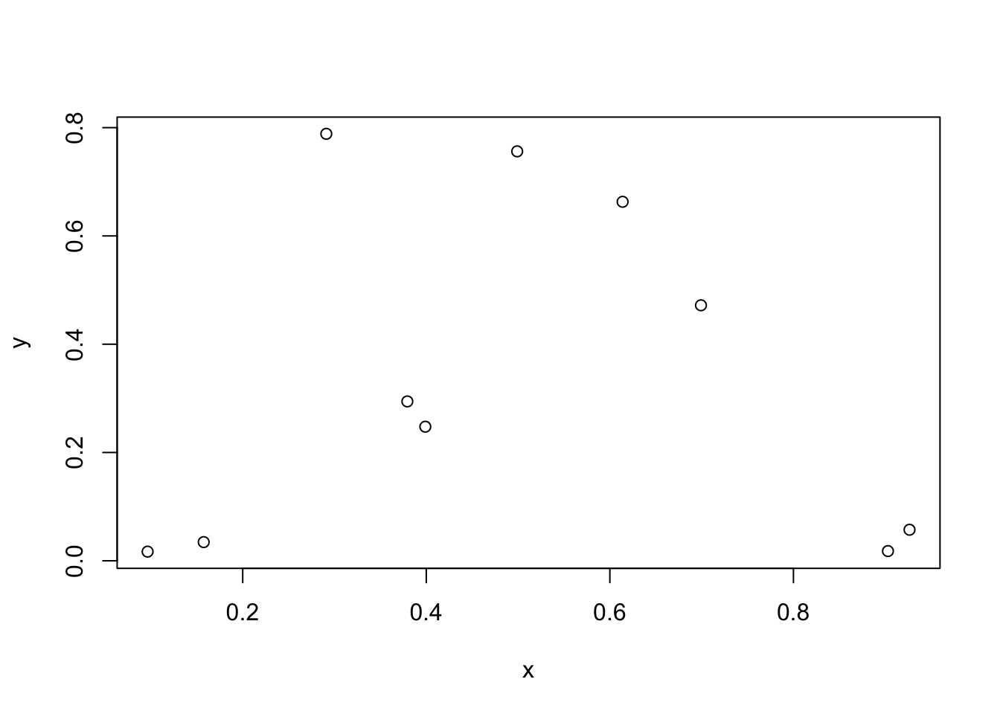
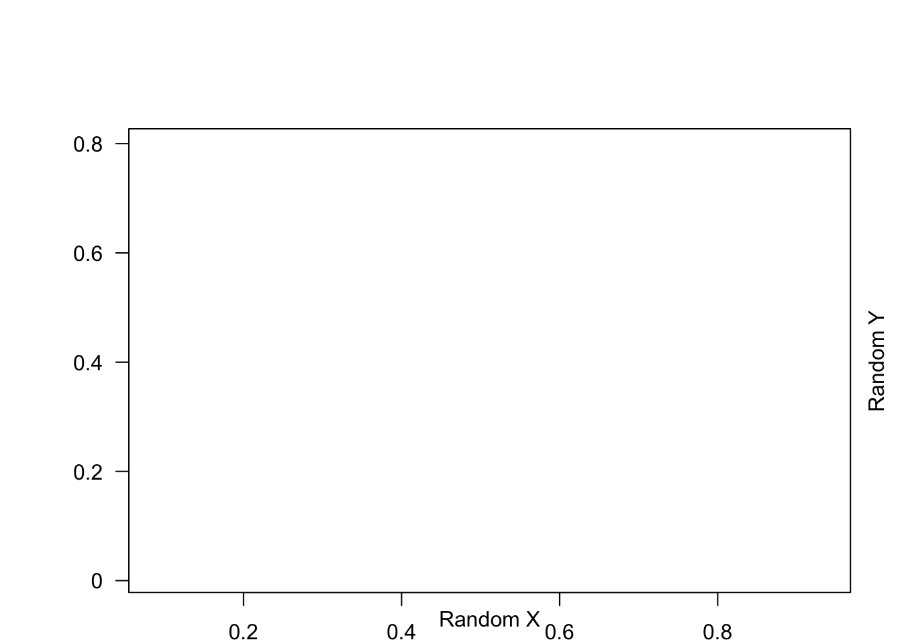
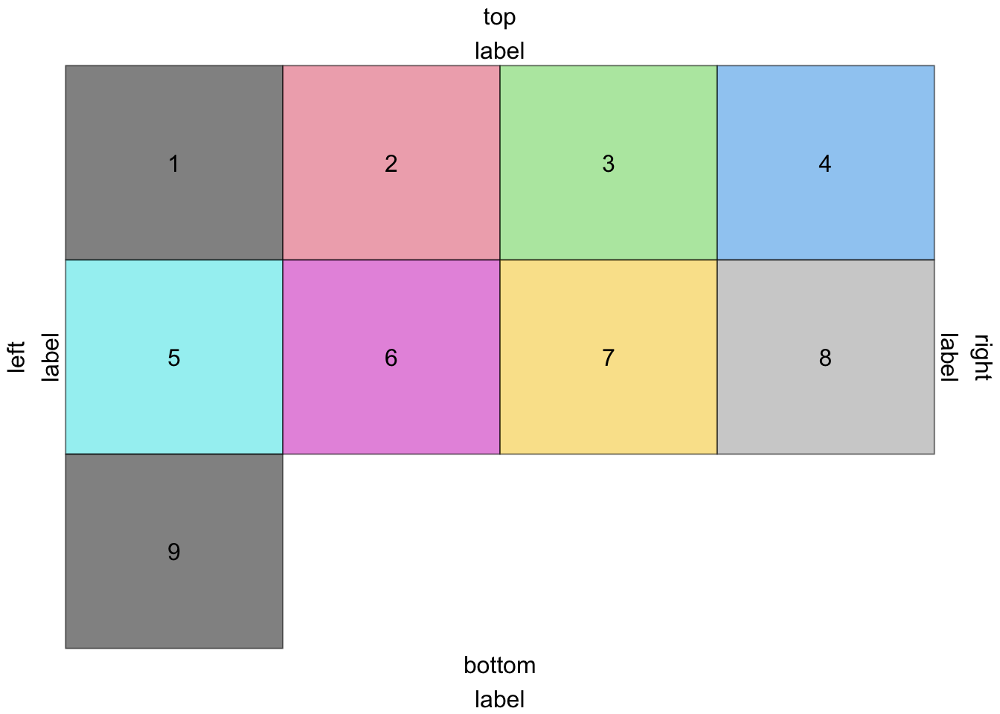

Code
grid.circle(x=seq(0.1, 0.9, length=100), # position
y=0.5 + 0.4*sin(seq(0, 2*pi, length=100)),
r=abs(0.1*cos(seq(0, 2*pi, length=100))))
The interface of plotting is powered by the package grid
grid.circle(x=seq(0.1, 0.9, length=100), # position
y=0.5 + 0.4*sin(seq(0, 2*pi, length=100)),
r=abs(0.1*cos(seq(0, 2*pi, length=100))))
viewports are “drawing contexts”, basically defining regions of plotting.
# An easy first example
grid.newpage()
vp1 <- viewport(x = .5, y = .5,
height = .9, width = .9,
xscale=c(0,1), yscale=c(0,1))
for (i in 1:5) {
pushViewport(vp1)
grid.rect()
}
# current.vpTree() # check the drawing contextWhat’s going on here?!
The viewports are stored in a tree structure, and the active context of the viewport
Example of recreating a scatter plot
x <- runif(10)
y <- runif(10)
plot(x, y)
Looking above, we can decompose the plot into 9 sections,
# first layer
main_vp <- viewport(layout = grid.layout(3, 3,
widths = unit(c(5, 1, 2), c("lines", "null", "lines")),
heights = unit(c(5, 1, 2), c("lines", "null", "lines"))),
name = "main")
# second layer
mr_vp <- viewport(layout.pos.row = 2, layout.pos.col = 3, name = "margin_right")
mb_vp <- viewport(layout.pos.row = 3, layout.pos.col = 2, name = "margin_bottom")
mt_vp <- viewport(layout.pos.row = 1, layout.pos.col = 2, name = "margin_top")
ml_vp <- viewport(layout.pos.row = 2, layout.pos.col = 3, name = "margin_left")
center_vp <- viewport(layout.pos.row = 2, layout.pos.col = 2, name = "center",
xscale = extendrange(x),
yscale = extendrange(y))
# create the viewport
splot <- vpTree(main_vp, vpList(mr_vp, mb_vp, mt_vp, ml_vp, center_vp))
splot # Currently just the description, and not associated with the graphics deviceviewport[main]->(viewport[margin_right], viewport[margin_bottom], viewport[margin_top], viewport[margin_left], viewport[center]) # viewport of current device
current.vpTree() # current vp tree of graphic deviceviewport[ROOT] current.viewport() # This is the current viewport LAYER (in the tree) of our graphics deviceviewport[ROOT] # In order to make the viewport splot active, we must add it to the vpTree of our device
pushViewport(splot)
current.vpTree() # notice how our tree has changedviewport[ROOT]->(viewport[main]->(viewport[margin_right], viewport[margin_top], viewport[margin_left], viewport[margin_bottom], viewport[center])) current.viewport() # our current layer is centerviewport[center] grid.points(x, y) # drawn to center, for some reason this isn't showing up
grid.xaxis()
grid.yaxis()
grid.rect()
# navigate to bottom margin
seekViewport("margin_bottom")
grid.text("Random X", y=unit(1, "lines"))
seekViewport("margin_left")
grid.text("Random Y", x=unit(1, "lines"), rot = 90)
Run all the code all at once, rmarkdown does some weird stuff with viewports
pushViewport(viewport())
upViewport()
pushViewport(viewport(name = "A"))
upViewport()
pushViewport(viewport(name = "B"))
upViewport()
current.vpTree()viewport[ROOT]->(viewport[GRID.VP.2], viewport[A], viewport[B]) The important structures of gtable object are
grobs:d# creating a gtable
gtable(unit(1:3, c("cm")),
unit(5, "cm"))TableGrob (1 x 3) "layout": 0 grobsa <- rectGrob(gp = gpar(fill = "red"))
a <- rectGrob(gp = gpar(fill = "red"))
b <- grobTree(rectGrob(), textGrob("new\ncell"))
c <- ggplotGrob(qplot(1:10,1:10))
d <- linesGrob()
mat <- matrix(list(a, b, c, d), nrow = 2)
g <- gtable_matrix(name = "demo", grobs = mat,
widths = unit(c(2, 4), "cm"),
heights = unit(c(2, 5), c("in", "lines")))
gTableGrob (2 x 2) "demo": 4 grobs
z cells name grob
1 1 (1-1,1-1) demo rect[GRID.rect.14]
2 2 (2-2,1-1) demo gTree[GRID.gTree.15]
3 3 (1-1,2-2) demo gtable[layout]
4 4 (2-2,2-2) demo lines[GRID.lines.57]dummy_grob <- function(id) {
grobTree(rectGrob(gp=gpar(fill=id, alpha=0.5)), textGrob(id))
}
gs <- lapply(1:9, dummy_grob)
grid.arrange(ncol=4, grobs=gs,
top="top\nlabel", bottom="bottom\nlabel",
left="left\nlabel", right="right\nlabel")
There are two common libraries for matrix operations, LAPACK and BLAS. There are many varieties of these two libraries,
sessionInfo() # Shows library used for matrix productsR version 4.2.0 (2022-04-22)
Platform: x86_64-apple-darwin17.0 (64-bit)
Running under: macOS Big Sur/Monterey 10.16
Matrix products: default
BLAS: /Library/Frameworks/R.framework/Versions/4.2/Resources/lib/libRblas.0.dylib
LAPACK: /Library/Frameworks/R.framework/Versions/4.2/Resources/lib/libRlapack.dylib
locale:
[1] en_US.UTF-8/en_US.UTF-8/en_US.UTF-8/C/en_US.UTF-8/en_US.UTF-8
attached base packages:
[1] grid stats graphics grDevices utils datasets methods
[8] base
other attached packages:
[1] gridExtra_2.3 gtable_0.3.0 forcats_0.5.1 stringr_1.4.0
[5] dplyr_1.0.9 purrr_0.3.4 readr_2.1.2 tidyr_1.2.0
[9] tibble_3.1.8 ggplot2_3.3.6 tidyverse_1.3.1
loaded via a namespace (and not attached):
[1] tidyselect_1.1.2 xfun_0.31 haven_2.5.0 colorspace_2.0-3
[5] vctrs_0.4.1 generics_0.1.3 htmltools_0.5.3 yaml_2.3.5
[9] utf8_1.2.2 rlang_1.0.6 pillar_1.8.0 glue_1.6.2
[13] withr_2.5.0 DBI_1.1.3 dbplyr_2.2.0 modelr_0.1.8
[17] readxl_1.4.0 lifecycle_1.0.1 munsell_0.5.0 cellranger_1.1.0
[21] rvest_1.0.2 htmlwidgets_1.5.4 codetools_0.2-18 evaluate_0.15
[25] labeling_0.4.2 knitr_1.39 tzdb_0.3.0 fastmap_1.1.0
[29] fansi_1.0.3 broom_0.8.0 backports_1.4.1 scales_1.2.0
[33] jsonlite_1.8.0 farver_2.1.1 fs_1.5.2 hms_1.1.1
[37] digest_0.6.29 stringi_1.7.8 cli_3.4.1 tools_4.2.0
[41] magrittr_2.0.3 crayon_1.5.1 pkgconfig_2.0.3 ellipsis_0.3.2
[45] xml2_1.3.3 reprex_2.0.1 lubridate_1.8.0 assertthat_0.2.1
[49] rmarkdown_2.14 httr_1.4.3 rstudioapi_0.13 R6_2.5.1
[53] compiler_4.2.0 Of note, R binary versus the CRAN version of the R binary have different libraries bundled together. For older versions of Rstudio, there is a BLAS library that is provided with Apple that sometimes is faster. Ultimately, R will look for a symlinked library in the lib/ folder.
# Install openblas
brew install openblas
# Some potentially useful symlinking commands
ln -sf /usr/local/opt/openblas/lib/libopenblas.dylib /usr/local/Cellar/r/4.1.2/lib/R/lib/libRblas.dylib
ln -sf /usr/local/opt/openblas/lib/libopenblas.dylib /usr/local/Cellar/r/4.1.2/lib/libRblas.dyliblibrary(rlang)
Attaching package: 'rlang'The following objects are masked from 'package:purrr':
%@%, as_function, flatten, flatten_chr, flatten_dbl, flatten_int,
flatten_lgl, flatten_raw, invoke, splice# two ways of creating a symbol
sym("x") # symbolxclass(expr(x)) # symbol[1] "name"quo(x)<quosure>
expr: ^x
env: global?quoHelp on topic 'quo' was found in the following packages:
Package Library
tidyselect /Library/Frameworks/R.framework/Versions/4.2/Resources/library
rlang /Library/Frameworks/R.framework/Versions/4.2/Resources/library
ggplot2 /Library/Frameworks/R.framework/Versions/4.2/Resources/library
dplyr /Library/Frameworks/R.framework/Versions/4.2/Resources/library
Using the first match ...expr("x") # expression[1] "x"as_string(sym("x")) [1] "x"as_name(sym("x")) # character[1] "x"class(as_name("x")) # character[1] "character"Quosures are special type of defused expression that also keeps track of the original context the expression was written in.
`quo is used to capture local expressions, and also track the environment the expression was written.
{% raw %} enquo is used to defuse function arguments, the {{ is short for this common pattern. The arguments need to be defused because otherwise R will try to evaluate the expression in its original environment. {% endraw %}
my_function <- function(var) {
var <- enquo(var)
their_function(!!var)
}
# Equivalently
my_function <- function(var) {
their_function({{ var }})
}